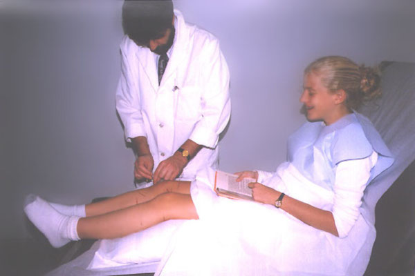
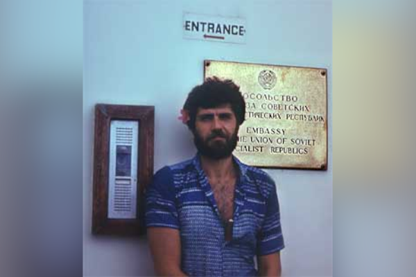
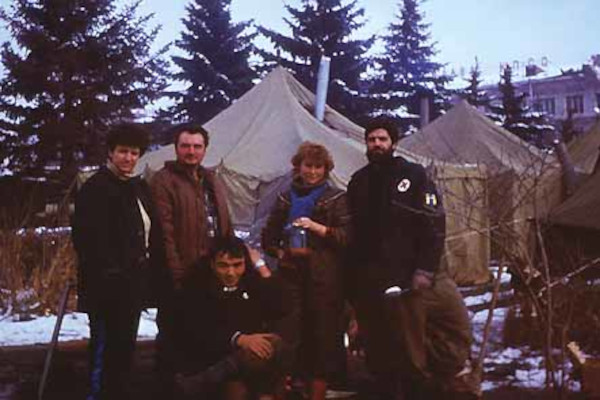

Established in 2000,
ACU Well Acupuncture & Integrative Medicine was awarded seven consecutive years "Best of Warwick, RI acupuncture" Awards
in 2011, 2012, 2013, 2014, 2015, 2016, 2017 and 2018. In 2015, Dr. Alex Tatevian, DAOM (RI), MD (USSR), FACSc, and his practice, received recognition by the International Association of HealthCare professionals as "Worldwide Leader in HealthCare & Top Acupuncture in Rhode Island";
with the inclusion in the 2015-2016 edition of Worldwide Leaders in Healthcare.
Patient-centered care is the philosophy of our practice.

Whether the goal is to lessen pain, address medical problems, find an alternative to pharmaceuticals, or improve your quality of life, our integrative medicine approach lets you get the best of both worlds with safe and proven complementing therapies.
We provide a health care environment in which patients are empowered through education and involvement in their own care. We work with each patient individually by building a foundation of mutual understanding, trust and respect.
Doctor of Acupuncture, Central National Institute of Advanced Training for Physicians, Moscow, USSR, 1982
Board Certified Diplomate in Acupuncture and Chinese Herbology (NCCAOM)
Licensed Doctor of Acupuncture in the State of Rhode Island
Dr. Alex Tatevian is a Board Certified Diplomate in Acupuncture and Chinese Herbology (NCCAOM) and a licensed Doctor of Acupuncture in the State of Rhode Island. Dr. Tatevian has extensive training in Western medicine. He received his MD degree from the Russian State Medical University (formerly the 2nd Moscow State Medical Institute) and completed his training in cardiology, acupuncture, and manual therapy. Fully certified in Rehabilitation and Sports Medicine, he was a physician for the Russian National Olympic Teams.

Alex Tatevian was a primary care physician with the Soviet Scientific Expeditions in Antarctica, where he provided total health care utilizing conventional medicine and acupuncture for the expedition participants. He was a co-founder of a medical center for Integrative Medicine providing conventional and alternative medical practices in Moscow.
He is a participating provider for BCBS and other medical insurance companies.
Dr. Alex Tatevian is an acupuncturist on staff at the Women & Infants Hospital of Rhode Island with clinical privileges and full appointment granted.
Dr. Tatevian is a regular contributor to the Southern New England Health Care Review and has maintained a monthly column in the health section of the Federal Hill Gazette since 1999.
Dr. Tatevian has conducted extensive formal research on the effectiveness of alternative medical therapies and their effect on body systems and the adaptation to extreme conditions. He has researched herbology formulations and their application to training regimens for athletes. Dr Tatevian has also researched the applications of emerging technologies such as laser in conjunction with acupuncture medicine.
At the present time, Dr. Tatevian is a principal researcher conducting a clinical crossover trial at the Women's Oncology Program, Women & Infant's Hospital of Rhode Island, investigating the efficacy of acupuncture as an adjunct for alleviating the side-effects associated with chemotherapy.
Acupuncture-related Research Projects and Publications (Curriculum Vitae)
Kalons as inhibitors of cell proliferation, 1977.
Effect of Autohemotherapy protocols on performance for Biathlon; 1982.
Effect of Acupuncture on cardio-sympathetic innervation for treatment of spinal-related arythmia; 1983.
Applications of acupuncture on Antarctic polar stations Bellinsghausen (1983-84) and Drugnaya-2 (1984-85): statistical analysis; 1985.
Acupuncture for non-specific stimulation of immune system and incidence of bacterial and viral infection diseases upon exposure to urban environment among long term Antarctic expedition participants: 1985.
Comprehensive program for behavior modification and rehabilitation of children with asthma; 1986.
Design and clinical trial of new patented device for electropuncture "Elite -010" /with Research Institute for Space Radio Communication "NIIDAR"/; 1985-87.
Clinical trial of low energy laser device for applications in acupuncture practice, 1987-90.
Electropuncture diagnostic system "Ryodoraku": the application for training monitoring in professional sport; 1988.
Chinese Herbology formulas for professional athletes (bicycle and rowing); 1987.
Electrical properties of acupuncture points: condenser vs. active resister, technical approach for instrumental measurement; 1988.
Electropuncture diagnostic system for "Ryodoraku" measurement with computer analysis and automatic calibration; 1990.
Calibration of multi-channel device for synchronized "Ryodoraku" measurement; 1987.
Infrared images of "active" acupuncture points for diagnostic purposes; 1988.
Investigation of influence of embryonic tissue extracts on tumor growth; 1988-1991.
Acupuncture devices for Double Blind Study Protocols in a randomized clinical trail, 1995-present.
Efficacy of acupuncture as an adjunct for alleviating nausea and vomiting associated with chemotherapy, 2000-present.
Biomorphological rationale for laser stimulation of myofascial trigger points and acupuncture points, 2003-2004;
2004 Annual Meeting of Association of Clinical Scientists; Session C: Frontiers of Clinical Science; The University of Texas, Houston, Texas
Last updated: 8-August-2024
Antarctic Expeditions
I worked as a primary care physician during the historic Soviet Antarctic expeditions that took place from 1983 to 1985.

Here are a few common facts about Antarctica:
It is the coldest continent.
Mean Temps:
Winter: -40 to -94° (-40 to -70°C)
Summer: -5 to -31° (-15 to -35°C)
Coldest Temp:
-129° (-89°C) on July 21, 1983 at Vostok Station (World low temperature record.)
Iciest:
The thickest ice found is in Wilkes Land, where it reaches a depth of 15,669 feet (4,776 meters).
Antarctic ice has accumulated over millions of years.
The ice is up to 3 miles deep and covers about 5.3 million square miles, or about 97.6 percent of the continent.
This volume of ice amounts to about 6 million cubic miles - if it were returned to the oceans, it would raise global sea level about 200 feet.
Antarctic ice represents 90 percent of all the world's ice and 70 percent of all the world's fresh water.
Highest:
The average thickness of ice makes Antarctica the highest continent.
Average elevation 8200 feet (2500 meters).
Windiest:
Gales reach 200 mph on Commonwealth Bay, George V coast.
Driest:
Average precipitation is less than 2 inches per year.
0.03% average humidity combined with the extreme cold makes the continental Antarctica the world's driest desert.
On the Polar Plateau solar radiation becomes zero as the sun dips below the horizon in March and isn't seen again until September.